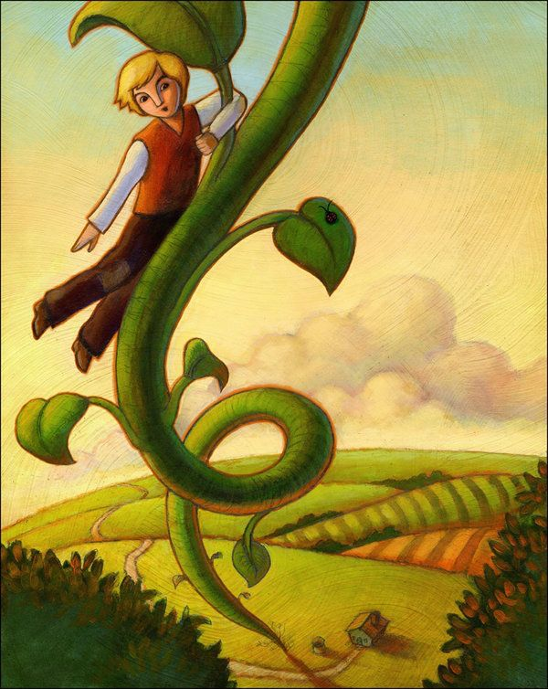

João e o pé de Feijão
Era uma vez um garotinho muito pobre. Seu nome era João e ele vivia com a mãe em uma casa simples afastada da cidade. Os dois estavam passando por dificuldades e não tinham mais o que comer. A única coisa que tinham era uma vaca, mas ela não dava leite, pois estava muito velha. Um dia a mãe de João disse para ele levar o animal para a cidade e tentar vendê-lo, só assim poderiam ter algum dinheiro naquele mês. O menino então obedeceu sua mãe e saiu com a vaca.
No meio do caminho, porém, ele encontrou um sujeito bem misterioso que lhe ofereceu um punhado de feijões em troca da vaca. O homem disse que os grãos eram mágicos e que deveriam ser plantados naquele dia. João aceita a troca e volta satisfeito e confiante para a casa. Mas quando sua mãe descobriu que o filho tinha vendido a vaca por uns simples feijões, não acreditou na história de que eram mágicos e os atirou pela janela, furiosa. João ficou muito triste e foi dormir contrariado. Acontece que no meio da noite algo incrível aconteceu. As sementinhas brotaram e um pé de feijão gigantesco cresceu no quintal.
Ao acordar, João olhou pela janela e quase não acreditou, ele achou que ainda estava sonhando. Mas era real! O menino então não pensou duas vezes, saiu correndo em direção à árvore e começou a subir. A escalada não foi fácil e ele sentiu medo, pois era uma árvore muito alta que chegava até o céu. Quando João finalmente chegou no topo ele percebeu que estava entre as nuvens. O garoto então desceu e se deparou com um lugar muito diferente onde havia um enorme castelo. Assim, ele se aproximou do castelo com cuidado e encontrou uma senhora.
João foi em direção a senhora para conhecê-la. Durante a conversa ela contou que ali morava um gigante malvado, então escondeu o menino no castelo enquanto o gigante dormia. Depois de dormir muito, o gigante acordou e, apesar de ainda estar com sono, estava morrendo de fome! Ele tinha um ótimo olfato e logo sentiu cheiro de criança. Mas a mulher fez uma grande refeição para ele, o que o deixou mais calmo. Assim, satisfeito, ele pediu que a sua galinha encantada botasse ovos de ouro para ele e que sua harpa tocasse música sozinha. Enquanto isso, João assistia fascinado a tudo aquilo.
O gigante, que era muito preguiçoso, dormiu novamente. João então aproveitou o momento e, enquanto a senhora estava fazendo outras tarefas, pegou a galinha e a harpa e fugiu em direção ao pé de feijão. O gigante percebeu e foi atrás do menino, mas a essa altura, ele estava longe e já descia pela árvore. João consegue descer bem rápido e o gigante também começa a descer, mas quando o garoto chega, corta a grande árvore. O gigante então cai de lá de cima, estatelado no chão e não levanta mais. João agora com a galinha dos ovos de ouro consegue ganhar dinheiro e ter prosperidade. Sua mãe fica feliz! A senhora que era empregada do gigante se torna a dona do castelo e também vive feliz no céu.